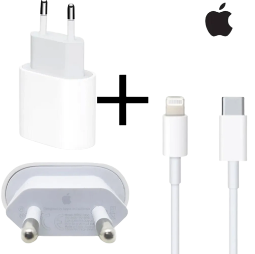
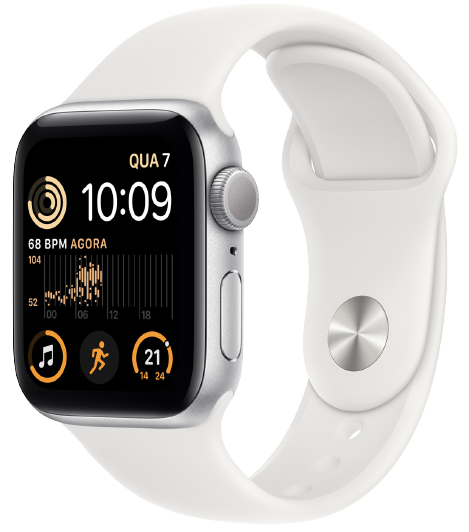

R$ 3.554,02 à vista
R$ 3.554,02 à vista
ou R$3948.91 em até 10x de R$ 394,89 sem juros
Grave vídeos 4K, faça belos retratos e capture paisagens inteiras com o novo sistema de câmera dupla. Tire fotos incríveis com pouca luz usando o modo Noite. Veja cores fiéis em fotos, vídeos e jogos na tela.Liquid Retina de 6,1 polegadas***. Leve o desempenho sem precedentes do chip A13 Bionic para seus games, realidade aumentada e fotografia. Faça muito e recarregue pouco com a bateria para o dia todo**. E conte com resistência à água de até dois metros por até 30 minutos*.Avisos legais.*O iPhone 11 é resistente a respingos, água e poeira e foi testado em condições controladas em laboratório, classificado como IP68 segundo a norma IEC 60529 (profundidade máxima de até dois metros por até 30 minutos). A resistência a respingos, água e poeira não é uma condição permanente e pode diminuir com o tempo. Não tente recarregar um iPhone molhado. Veja instruçoes no Manual do Usuário para limpeza e secagem. Danos decorrentes de contato com líquidos não estão incluídos na garantia.**A duração da bateria varia de acordo com o uso e a configuração. Consulte o site do fabricante para obter mais informações.
R$82,89 no PIX (10% de desconto)
Carregador Turbo 20W + Cabo Lightning para USB-C Compatível Iphone 11 12 13 Pro Max X XR XS O carregador de parede USB-C de 20W é rápido e altamente eficiente, ideal para acompanhá-lo onde você estiver, no trabalho, em casa ou em viagens. Carregue qualquer aparelho que possua uma porta USB-C com ainda mais velocidade. Você também pode emparelhá-lo com o iPhone 8 ou posterior para aproveitar o recurso de CARREGAMENTO RÁPIDO. Kit acompanha Cabo USB-C para Lightning
.png)
R$244,90 ou $244,90 em 5x de $48,98 juros
Fone de Ouvido c/ fio Caixa Lacrada (ORIGINAL) NÃO PRECISA LIGAR O BLUETOOTH SÓ CONECTAR. SIM! Acompanha Nota Fiscal (NFe) em seu Nome. Conector Lightning - Original. Modelos compatíveis: Do iPhone 5 até o 13 Pro Max.
$125,81 no PIX (20% de desconto)ou R$157,26 em 2x de R$ 78,63 sem juros.
Relogio Smart watch Branco Inteligente X8 Para iPhone 8 X 11 12 13 Relógio Smart Watch X8 Coloca foto de fundo, troca pulseira e com Nota Fiscal. Além do design inovador de tela colorida em alta definição, o SmartWatch X8 te proporciona acabamento fino, elegância em todas as horas e o diferencial único de múltiplas watchfaces personalizadas, ou seja, deixe o fundo de tela com sua foto favorita! Funções: Faz e recebe ligações. Notificações de mensagens (Whatsapp, SMS, Facebook, Instagram). Modo Esportivo: corrida, ciclismo, pula corda e montanhismo. Contador de passos. Monitor de sono. Monitor de frequência cardíaca. Controle remoto da câmera Cronômetro Encontrar celular Lanterna Alarme Música BT Clima